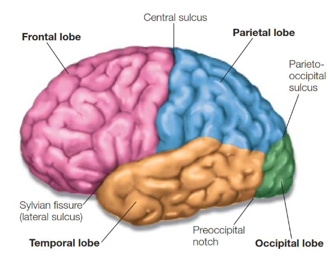

Neural system
It is divided in two parts:
- Central nervous system with the brain and the spinal cord
- Peripheral nervous system with everything else
But also in:
- sympathetic system: participates in the body’s response to stress
- Parasympathetic system: acts to conserve body resources and restore homeostasis
- Enteric system: controls the function of smooth muscle of the gut
Central nervous system
It is protected with 3 membranes:
- Dura mater: outer and thicker
- Arachnoid mater: middle
- Pia mater: inner, delicate, firmly adheres with the brain surface
Cerebrospinal Fluid occupies:
- the space between the arachnoid membrane and the pia mater
- the brain ventricles
- cisterns and sulci
- central canal of the spinal cord
it allows:
- the brain to float to help offset the pressure that would be present if the brain were merely sitting on the base of the skull
- reduces shock to the brain and spinal cord during rapid accelerations or deceleration, such as when we fall or are struck on the head
Blood-brain barrier
Barrier between the brain’s blood vessels (capillaries) and the cells and other components that make up brain tissue. Whereas the skull, meninges and cerebrospinal fluid protect against physical damage, the blood–brain barrier provides a defense against disease-causing pathogens and toxins that may be present in our blood. Very effective at preventing unwanted substances from accessing the brain, which has a downside. The vast majority of potential drug treatments do not readily cross the barrier, posing a huge impediment to treating mental and neurological disorders.
Spinal cord
It is divided into 31 segments. Each segment has a right and a left spinal nerve that
enters and exits from the vertebral column.
Each spinal nerve has
- sensory axon: afferent neuron, input through the dorsal root into the spinal cord.
- motor axons: efferent neuron carries motor output through the ventral root away
from it.
Different types of neurons buckings
- Nucleus: compact arrangement of nerve cell bodies and their connections, ranging from hundreds to millions of neurons, with functionally similar inputs and outputs. They are located throughout both the brain and the spinal cord.
- Layer: thin sheets, folded across the surfaces of the cerebral hemispheres like handkerchief. They can be found in the cerebral cortex.
The brain
It is divided in 6 subdivision:
- Medulla
- Pons
- Midbrain
- Cerebellum
- Diencephalon
- Cerebral hemispheres or telencephalon
The brain is symmetrical and so, each subdivision can be found in both hemispheres
The brain stem regulates basic life functions like:
- blood pressure
- Respiration
- Sleep/wakefulness
Damage to the brainstem is life-threatening.
The cerebellum
It contains far more neurons than any other single subdivision of the brain. It's divided into several lobes, and it is important for posture, coordinality, regulation of motor output and learning motor skills. Also involved in cognitive functions.
The diencephalon: thalamus & hypothalamus
Thalamus
Gateway to the cortex, is the essential link pathway of sensory information from the periphery to sensory regions of the cerebral hemispheres and determines which sensory information reaches the neocortex.
Hypothalamus
Ventral to the thalamus, it is the link between the nervous and the endocrine system also regulates body temperature, thirst and hunger, and the circadian rhythm. Is the essential component of the motivational systems of the brain, initiating and maintaining behaviors the organism finds averse or rewarding.
Basal Ganglia
- Collection of sub-cortical nuclei
- Receive inputs from sensory and motor areas
- Send output largely through the thalamus to the frontal lobe
- Extensively interconnected
- Has a crucial role in motor control
The movement control works in two ways: activation and inhibition of movement. If one of the two paths gets damaged, there will be some motor problems (Parkinson, Huntington). Play a big role in reward-based learning and goal-oriented behavior. It has many dopamine receptors monitoring reinforcements and rewards, and changes in dopamine represent the error between predicted future reward and actual reward.
The amygdala
Small, almond shaped structures in the medial temporal lobe adjacent to the anterior portion of the hippocampus. It is a collection of 13 nuclei. It is involved in attention, perception, value representation, decision-making, learning, memory.
The hippocampus
Small, curved formation. Crucial for memory formation and spatial memory.
Cerebral Cortex
Divided in 4 lobes, distinguished from one another by pronounced sulci. The lobes of the cerebral cortex have a variety of functional roles in neural processing. Cognitive brain systems are often composed of networks whose component parts are located in different lobes of the cortex. Each functional system is hierarchically organized, areas of the cerebral cortex are designated as primary, secondary, or tertiary areas, depending on their functional sequence within the pathway. 
Cytoarchitectonic division
Used tissue stains that permitted him to visualize the different cell types in different brain regions, characterized in 52 distinct regions. Cytoarchitectonics: the study of cellular architecture or how cells differ between regions.
Functional division
Frontal Lobe
- Motor cortex: planning of movements.
- Prefrontal cortex: long-term planning, ddecision-making votivation and value, executive functions.
Occipital Lobe
- Visual cortex.
- Primary visual cortex: begins the cortical coding of visual features.
- Retinotopic maps: the receptive fields of visual cells form an orderly mapping between spatial location and the neural representation of that dimension.
Temporal Lobe
- Sound processing: from the cochlea in the ear proceeds through the subcortical relays to the thalamus to reach primary auditory cortex.
- Tonotopic organization: layout of the neurons based on sound frequency.
Association cortex
It is a portion of the neocortex that is neither
sensory nor motor, contain cells that may be activated by more
than one sensory modality. Receives and integrates inputs from many
cortical areas to produce integrated experience of the world. Responsible for all our high-end human abilities, such as language, abstract thinking. Each sense has a sensory association area:
- visual association cortex
- Auditory association cortex